Experiment Report:
Spectroscopic properties of sand samples in a variety of mediums at high temperature
DISCLAIMER
The results, interpretations and conclusions in this report have been derived from Adrok’s electronic system measurements and, whilst reasonable diligence has been applied to ensure data quality, Adrok cannot guarantee the accuracy or correctness of any results, interpretations and conclusions derived from those measurements. As a consequence, Adrok (nor any of its directors, officers, employees, advisers and consultants, whether past or present) shall be held liable for any loss, costs, damages or expenses of whatever kind (including any consequential loss, costs, damages or expenses) incurred or sustained by any person with respect to such results, interpretations and conclusions or reliance thereon.
ABBREVIATIONS
Adrok = Adrok Ltd
Tx = Transmitter
Rx = Receiver
TCC01 = Adrok typecasting chamber 01.
GLOSSARY OF ADROK’S TERMS
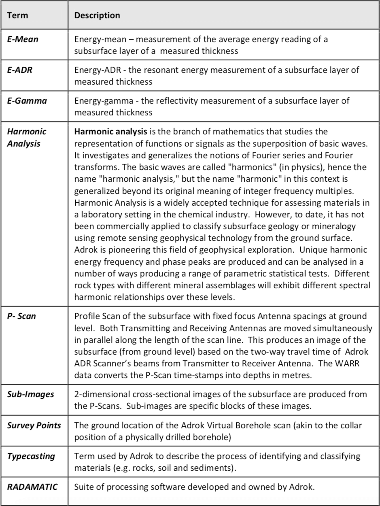1.0 ABSTRACT SUMMARY
This is a laboratory based study of samples of sand in water and sand in Oil analysed using Adrok’s Atomic Dielectric Resonance (ADR) technology at 200°F (93.3°C) temperature. This study compliments a previous study conducted by Adrok in January 2013 of the same samples at room temperature. (‘Report 00142_v1 Adrok- Chevron.pdf’)
Characterisation of the different sand samples in these different mediums is of vital importance to Chevron to aid the distinction of the different sand zones in a well. Adrok applies their laboratory ADR Spectroscopic techniques to assess the differences in said samples.
2.0 INTRODUCTION
Adrok develops and uses advanced technology to supply geophysical services for locating, identifying and mapping sub-surface natural resources (oil, gas, water and minerals).
Chevron (www.chevron.com) is one of the world's leading integrated energy companies and conducts business worldwide.
Chevron provided Adrok with the following samples and information:
- Eight (8) samples of sand. In particular, two sand samples in air, two sand samples in oil and two additional samples for sand at slightly different depths. In order to perform the analysis, samples are labelled in the same format as the previous report (‘Report 00142_v1 Adrok-Chevron.pdf’) however, in this instance the term ‘hot’ has been appended to the name to allow comparison with the previous data acquired at room temperature :
- SAIR, for 1 sand core in air
- SWATER1 for the 1 sand core in water with 1 horizontal grey line
- SWATER2 for sand in water with 2 horizontal grey lines
- SOIL1 for sand in oil with 3 horizontal grey lines and
- SOIL2 for sand in oil with 4 horizontal grey lines.
The additional samples are labelled as KR89510 and KR89530, respectively. The grey lines refer to tape applied by Chevron, to the external container for each sample. There is no specific instruction as to what these represent but it is assumed these represent the sample number.
In order to clarify the origin of the samples a well log is reported in figure 1.
The differences between the sand samples at high temperature (200°F or 93.3°C), are observed using Adrok’s ADR spectrometer. The variations that occur in the energy signals (primarily E-Range, E-Mean, E-ADR) are related to the physical and chemical properties of each sample. These parameters are used in order to characterise and distinguish the different sand samples.
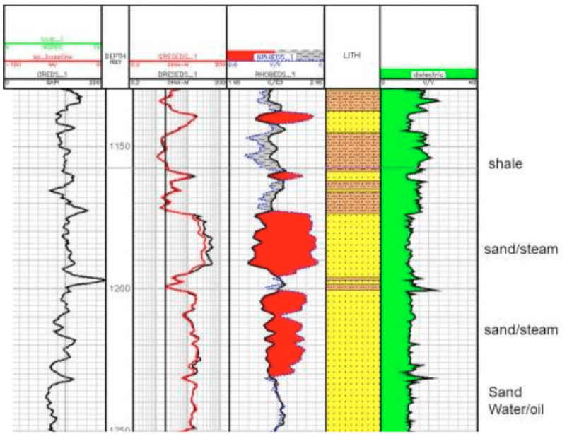 Figure 1: A sub-section of well log.2.1 OBJECTIVES
- ADR analysis of sand samples in order to calculate:
- ADR ratio (E-ADR)
- Energy mean (E-mean)
- Energy range (E-Range)
- Analyse dataset in order to characterise the sand samples in water and oil, respectively.
- Distinguish samples based on temperature.
3.0 HYPOTHESES
Using ADR technology, it is possible to highlight the different spectroscopic features between different sand samples in air, water and oil at room temperature and at 93.3°C respectively.
4.0 METHODOLOGY
Each sample was heated up to 200°F (93.33°C) and was scanned in order to obtain the spectral features at high temperature. The ADR analysis of sand samples is performed by acquiring a set of 3 ADR scans for each rock sample. In addition to these scans, an empty chamber is acquired in order to subtract the empty chamber spectra from the rock spectra (i.e. to remove the background). In particular, the processes that are used in order to create these file can be summarised as follows:
- The ‘compare sample function’ in Radamatic (Adrok’s proprietary software suite) is used to select the best 2 (out of 3) scans for each sample.
- These two scans are added using Principal Component Addition (PCA).
- An X3Y3 smoothing filter is applied to the PCA (and empty chamber) image.
- The image of the empty chamber is then subtracted from the PCA image.
Before the measurements were taken, it was necessary to check the stabilisation of the A01-TCU01 unit. In order to do this, the source of the trace was referenced in the scope screen, by putting the 7th wave in the centre of the scope screen. After referenced, one scan every 20 minutes was acquired. Two parameters were checked, the central position of the 7th wave in the scope and the vertical “jitter” of the source trace.
An alternative way to verify the unit consistency is to record the reference wave in the scope, show the reference wave in the scope and check how the source wave moves, respect to the reference wave. Following stabilisation of the radio frequency source, a set of 3 spectra of the empty chamber were recorded. After these scans, the data for the 7 rock samples was acquired.
Data Analysis
Among the numerous data analysis options that Adrok can employ, one such option is the creation of a false colour image from three separate analytical results. Details on how this is achieved are given in figure 2. The normalisation of analytical data to range from 0 to 1 provides a value that can be used as one of the components of an RGB image (in Matlab). Figure 3 demonstrates the type of image that can be expected. This example looks at sub-surface areas, creating unique colours for layers of fixed thickness, however, the same principles apply when comparing samples within the lab.
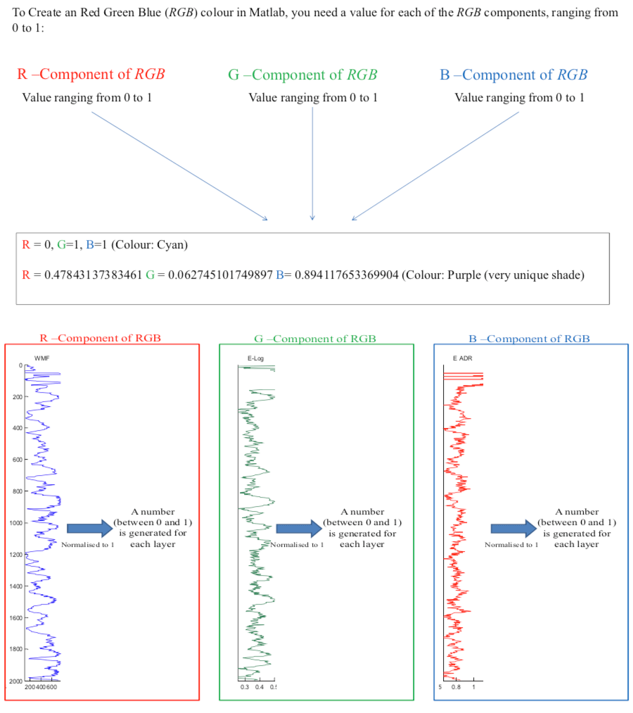 Figure 2: Description of how Matlab creates a unique colour and how Adroks analytical components can be normalised to create one of the 3 RGB components that can create such a unique colour.In this example, the peach areas enclosed within the solid lines correspond with high responses of the WMF and the E-log. It can be seen that the slight changes in the shade of peach appears to be determined by the small changes in the E-ADR.
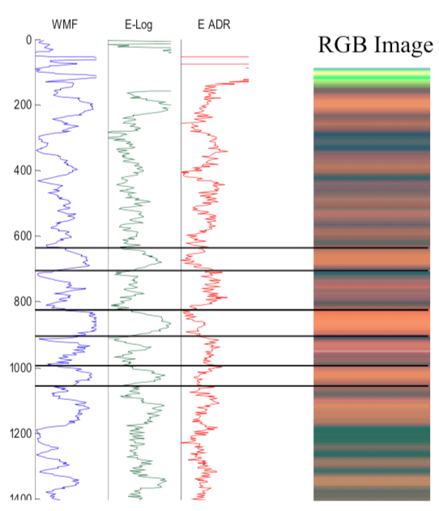 Figure 3: Demonstration of the type of image that can be created using Adrok’s analytical parameters and how this presentation can aid the identification of similarities and differences between separately analysed samples.5.0 APPARATUS
The chamber setup configuration is presented in figure 4.
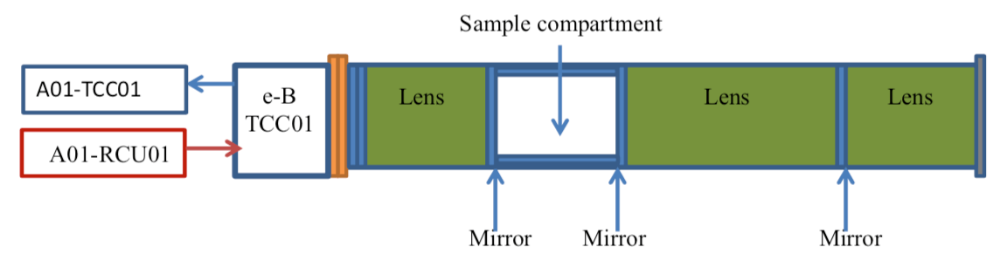 Figure 4: ADR chamber. The source A01-TCC01 is connected to the e-B TCC01 unit with the transmitter output plug and the signal coming out from the e-B TCC01 unit is connected to the second input channel of the A01-RCU01.Figure 5 shows a rock sample in the chamber and figure 6 presents the receiver trace and the waveform snapshot parameters at the moment of acquisition.
 Figure 5. Example of sample position measurement
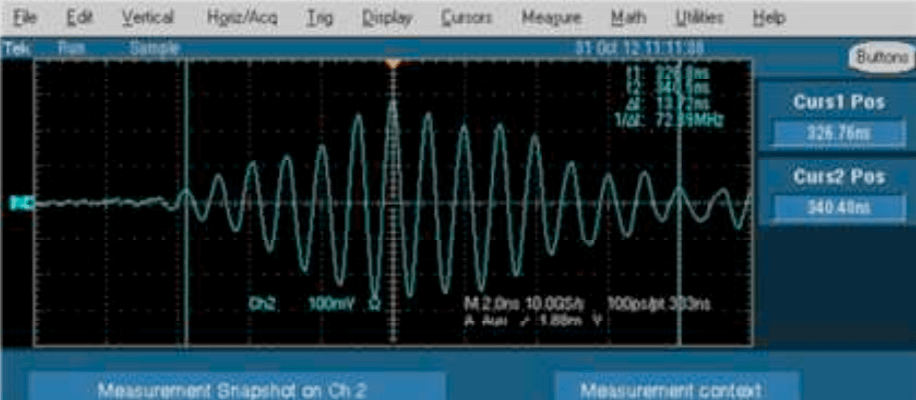
Figure 6. Stabilised receiver trace
Figure 5. Example of sample position measurement
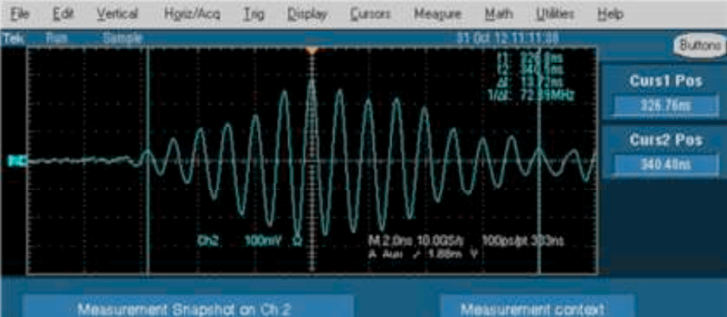
Figure 6. Stabilised receiver trace
7.0 RESULTS
Table 1 contains a summary of each sample; name, weight, volume and density acquired at room temperature.
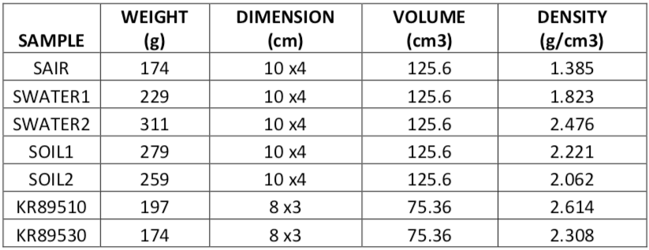 Table 1. Summary statistics for each analysed sample.The ADR scans enable the Energy Range (E-Range), Energy Mean (E-Mean) and Energy ADR (E-ADR) to be calculated. These parameters acquired at 93.3°C have been combined to create a false image, as described above and which can be observed in figure 7. Values for ERange, EMean and EADR were normalised (0 to 1) across all samples. These values were then used to create a Red (Erange) / Green (EMean) / Blue (EADR), RGB stripe. This RGB image displays the way in which the three parameters vary relative to one and other (i.e. sample to sample).
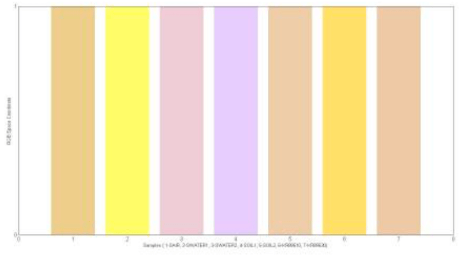 Figure 7. Sand samples at 93.3°C RGB false image. Sample 1 is SAIR, sample 2 is SWATER1, sample 3 is SWATER2, samples 4 and 5 represent SOIL1 and SOIL2 and finally KR89510 and KR89530 represent samples 6 and 7 respectively.In order to have a better comparison between the sand samples in oil and samples in water, figure 8 diplays the RGB values for these samples.
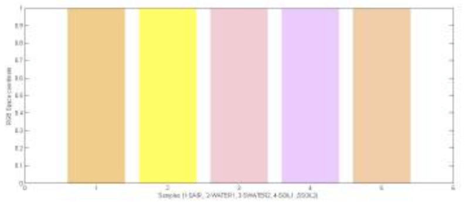 Figure 8. Sand samples at 93.3°C on RGB false image. Sample 1 is SAIR, sample 2 is SWATER1, sample 3 is SWATER2, samples 4 and 5 represents SOIL1 and SOIL2 respectively.In figure 9 the RGB co-ordinate space value at room temperature, measured previously, is reported.
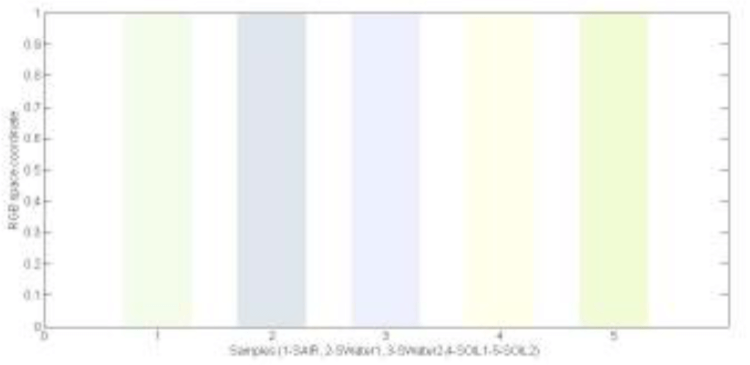 Figure 9. Sand samples at room temperature on RGB false image. Sample 1 is SAIR, sample 2 is SWATER1, sample 3 is SWATER2, sample 4 and 5 represents SOIL1 and SOIL2.The ADR harmonic energy variation represents an additional feature related to the physical and chemical composition of the rocks. Figure 10 shows the ADR harmonic energy variation at 93.3°C for the sand samples in water and in oil respectively.
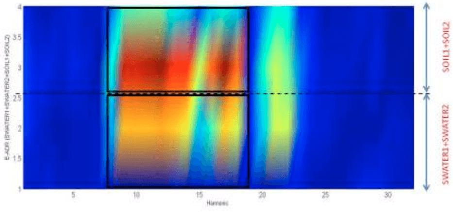 Figure 10. E-ADR harmonic energy variation at 93.3°C for SWATER1 and SWATER2 and SOIL1 and SOIL2.In figure 11 the E-ADR harmonic variation energy at 93.3°C between 6th and 25th harmonic is reported.
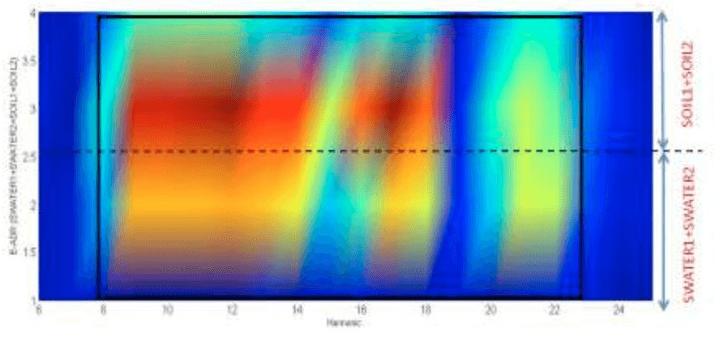 Figure 11. E-ADR harmonic energy variation for SWATER1 and SWATER2 and SOIL1 and SOIL2.Figure 12 shows the E-ADR Harmonic energy variation at 93.3°C for the sand samples in air and water, iuncluding SAIR samples.
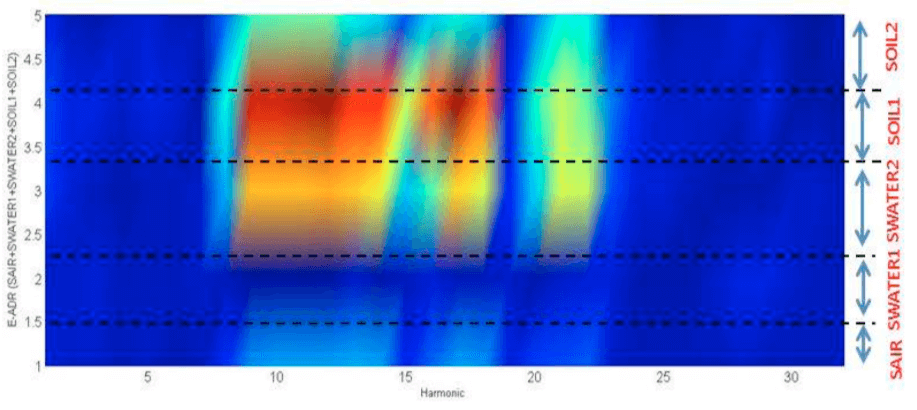 Figure 12 E-ADR harmonic energy variation for SAIR, SWATER1 and SWATER2 and SOIL1 and SOIL2.Figure 13 shows the E-ADR Harmonic energy variation at 93.3°C for the sand samples in water including KR89510 and KR89530 samples.
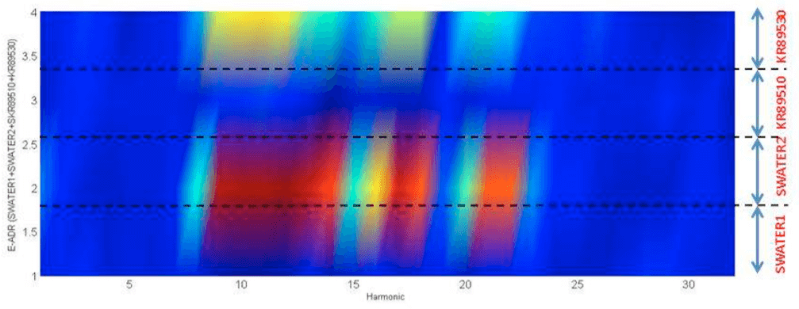 Figure 13 E-ADR harmonic energy variation for SWATER1, SWATER2 and KR89510 and KR89530.In addition to this a comparison between the same samples at different temperatures is reported. In particular, figure 14 shows the comparison between water sample no.1 (SWATER1) at room temperature and at 93.3°C respectively.
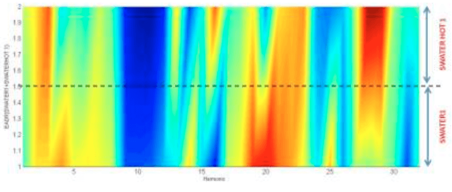 Figure 14 E-ADR harmonic energy variation for the water sample no. 1 (SWATER1 and SWATER1 HOT) at room temperature and at 93.3°C respectively.In figure 15 the comparison between water sample no.2 (SWATER2) at room temperature and at 93.3°C respectively, is presented.
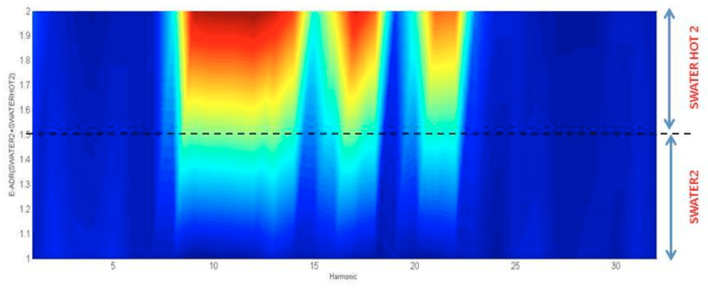 Figure 15 E-ADR harmonic energy variation for water samples no. 2 (SWATER2 and SWATER2 HOT) at room temperature and at 93.3°C respectively.The same comparsion is displayed for the oil samples in figures 16 and 17.
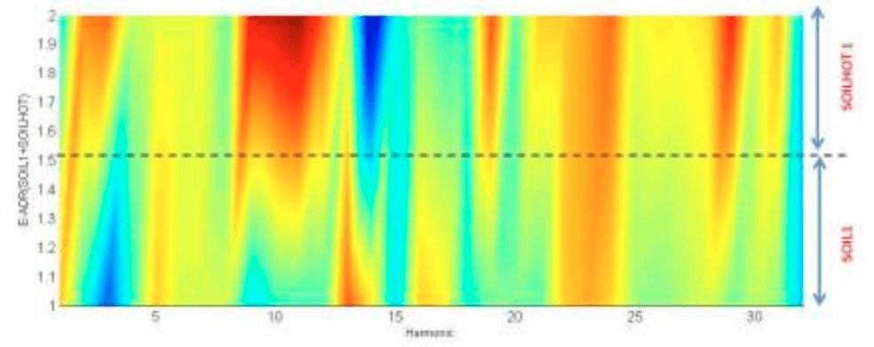 Figure 16 E-ADR harmonic energy variation for the first set oil sample no.1 (SOIL1 and SOIL1 HOT) at room temperature and at 93.3°C respectively.Figure 17 shows the shows the different E-ADR energy value between oil sample n.2 (SOIL2) at room temperature and 93.3 C degree respectively.
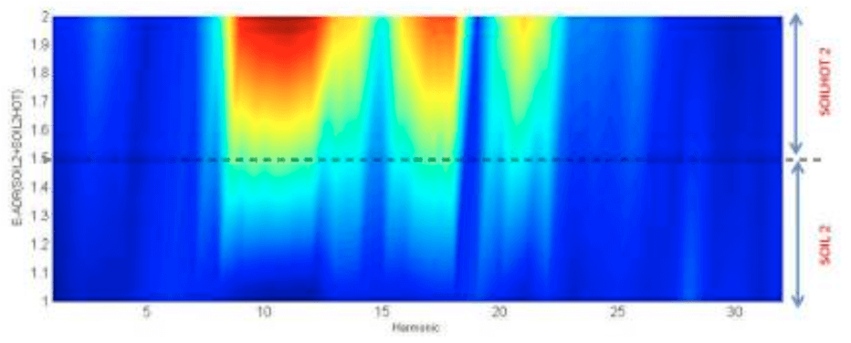 Figure 17 E-ADR harmonic energy variation for the second set of oil samples n.2 (SOIL2 and SOIL2 HOT) at different temperature8.0 DISCUSSION
The ADR scans enabled the E-Range, E-Mean and E-ADR to be calculated for the sand samples. This data was used to create a false RGB image which was presented in figure 7. The RGB graph is a visual tool that allows the changes in E-Range, E-mean and E-ADR to be highlighted. RGB graphs represent a 3 coordinate space, whereby, the combination of the coordinates gives a defined colour. In order to obtain this, it was necessary to take an average value for E-Range, E-Mean and E-ADR for every sample, then find the maximum value for E-Range, E-Mean and E-ADR respectively, across all samples. Finally, by dividing every averaged value by the maximum value, a normalised value is obtained (these value range from 0 to 1). Once the E-Range, E-Mean and E-ADR are normalised, this gives three sets of numbers that vary from 0 to 1 forming the RGB space.
Figure 7 and 8 demonstrated the change of E-Range (R-component), E-Mean (G- component) and E-ADR (B-component) respectively, for the different sand samples at 93.3°C. The strips corresponding to the different samples show different colours, which is due to the different physical and chemical composition of the samples. In particular, it is possible to distinguish a sand sample in oil (SOIL1 AND SOIL2) from sand samples in water and air respectively. Sand in oil samples present an increase of the E-ADR values with respect to sand in water (SWATER1 AND SWATER2). The E-ADR growth effect is due to the process of heating the samples, this allows us to distinguish, the same samples at different temperatures. In fact, by comparing figure 8 and figure 9 it is possible to see a colour differences due to the increase of E-ADR component given by the heating process. Figure 7 shows that samples 6 and 7 (KR89510 and KR89530) present similar colours to S2 and S5 (SWATER1 AND SOIL2). KR89510 and KR89530 RGB results are slightly different from that acquired at room temperature, in particular, the KR89530 presents similar colours to the sample in oil no.2 (SOIL2). Conversely, previous results, acquired at room temperature, show that KR89530 had similar colours to SWATER2, this difference could be due to the heating process eliminating the water present in the KR89530 sample.
A better characterisation for sand samples in oil and water can be obtained from the ADR harmonic energy variation images. Figures 10-12 show the change of the ADR harmonic energy for sand samples in air, water and oil. In particular, figure 10 shows the Harmonic energy variation of sand in oil and sand in water. Figure 11 shows the same harmonic energy variation between the 8th and 23th harmonic. It is possible to observe that sand in oil and sand in water presents different values between this harmonic range, (this area is highlighted by using a black rectangle). In particular, SWATER1 and SWATER2 have smaller harmonic values than SOIL1 and SOIL2. This is clearly shown in figure 11, with red colour features present in the SOIL1 and SOIL2 samples. Conversely, SWATER1 and SWATER2 show a small harmonic value, depicted as an orange colour. In addition to this, between harmonic 19 and 23 a slightly different colour between water samples and oil samples can be observed, water samples present a red component, whereas oil samples present a more pronounced blue component.
In Figure 13, the ADR harmonic variation for the sand samples in air (SAIR) is added to the previous samples, displayed in figure 11. In this case, the ADR energy variation for SAIR (bottom part of the graph) presents a different values between the 9th and 19th harmonic. In particular, SAIR presents smaller values between the 9th and 19th harmonic, with respect to the water and oil samples. This is clearly shown by a blue component in the bottom part of figure 13. This pattern is characteristic for SAIR and enables its distinction from other sand samples. Figure 13 shows the E-ADR harmonic energy pattern for sand samples in water as well as KR89510 and KR89530 samples. Two KR samples displays a distinct pattern between the 9th and the 23th harmonic. In particular, KR89510 presents a blue colour in the specified harmonics range. KR89530 presents a red colour instead. This harmonic energy pattern characterises the KR89510 and KR89530 samples from the water and oil sand samples.
Figures 14-17 show the behaviour of the same sample at different temperatures. In figure 14, E-ADR harmonic values for water sample no.1 at room temperature and at 93.3°C respectively, is shown. In this case, it is possible to observe changes in colour that correspond to changes in the E-ADR harmonic values, between the 4th and 8th and between the 12th and 31th harmonics. This effect is due to the temperature differences. Figure 15 shows the same values for water sample no.2. Water sample no.2 at 93.3°C (SWATER HOT 2) present higher E-ADR harmonic values than the same sample at room temperature, this is due to the sample heating that increase the E-ADR values between the 9th and 23th harmonics.
Figures 16 and 17 show the temperature effects for oil samples, SOIL1 and SOIL2 respectively. In figure 16, the oil sample at 93.3°C (SOIL HOT 1) shows high E-ADR harmonics between 9th and 13th harmonic (red colour) and a small E-ADR (blue colour) values between the 12th and 16th harmonic, with reference to the same sample at room temperature. Also, in this case, the effect of sample heating is clearly shown. Figure 17 shows the same effects for the sand sample in oil no.2. In particular, the oil sample at 93.3°C (SOIL HOT 2) presents a quite distinct E-ADR harmonic value between the 8th and 14th harmonic and between the 16th and 20th harmonic.
The ADR harmonic Energy variation is an additional parameter that highlights the difference between sand samples, as well as identifying a specific harmonic energy pattern for the different samples. In addition to this, ADR harmonic Energy allows the changes in spectroscopic features, due to the heating process of the samples, to be distinguished.
9.0 CONCLUSIONS
Sand samples in air, in water and in oil at 200°F (93.3°C) were investigated by using Adrok technology. Energy-Range, Energy-Mean and Energy-Gamma are parameters related to the physical and chemical properties of the rock samples. By using these parameters, (RGB images presented in figures 7 and 8) the differences between the samples can be highlighted. Harmonic energy ADR images reported in figures 10 to 13 have given a specific pattern for the rock samples. In addition to this, by using harmonic energy ADR values, the heating effects of the sample can be seen, in particular, the increase in the E-ADR values with temperature. The results of the harmonic analysis have provided positive results for the distinction of different types of material laden sand, both at room temperature and when heated to 93.3°C.
10.0 FUTURE RESEARCH RECOMMENDATIONS
The laboratory results have demonstrated that it is possible to observe the differences between sands containing different types of material and distinguish the sand samples in oil, water and in air, at room temperature and at 93.3°C. A future recommendation would be to acquire field data which could be compared to the laboratory data presented here.